mailARS 1.0.4
What’s this?
mailARS is an open-sourced application for Windows, macOS, and Linux,
that enables sending quizzes and problems to students to individually
work on during class (typically a virtual class) und submit their work
electronically, possibly as a photo. Teachers can react upon such
submissions both individually and to the entire class. mailARS is
intended to be used alongside video conferencing software. Concerning
the didactics, see the (German) paper
on its browser-based predecessor.
Technically speaking, mailARS is an e-mail client that works with
graphics rather than with text. This reason behind this solution is the
GDPR, as
mailARS only employs a school’s existing e-mail system, for which
GDPR-conformant regulations and processes are required to already be in
place. Hence, the use of mailARS should not require further
organizational work.
For news about updates please follow: https://j3l7h.de/blog/
Installation
mailARS works with e-mail servers that employ the protocols SMTP und
IMAP. Should your school use different protocols or additional
authentication, you need to adapt or augment the source code contained
in the file mailing.py.
If you want to use a smartphone or tablet for drawing, you should connect
this as an additional
display and drag mailARS’s drawing windows there. A smartphone
could be
used as webcam.
mailARS is written in Python and requires Python 3.7 or younger for
execution; Python 3.8 or newer is advisable. On Windows 10,
you can install Python from the Microsoft
Store. By default, macOS contains only Python 2.x; it needs
to be updated.
On Linux, an up-to-date version of Python should already be installed.
For other operating systems see Python.org.
To check whether or not Python is installed correctly, open a terminal
window (Windows 10: type cmd into
the search box) and type python⏎ into
it. After that, Python should respond with its versions number. (If
Python is not installed system-wide on Windows 10, the Windows
Store will open instead.) Verify the version number. To prevent
confusion, only one version of Python should be installed. After that,
leave Python by typing quit()⏎.
mailARS requires a library for its graphical user interface and a library
to access the webcam. Hence, while being connected to the internet,
enter the following into the above-mentioned terminal window (not into
Python!):
pip install pyqt5 opencv-python
numpy==1.19.3⏎
On macOS, use this instead:
pip install pyqt5
opencv-python-headless⏎
(Hint: Copy the respective line
from this text, without the arrow ⏎.) Typically, you can ignore
subsequent warnings concerning an old version of pip or concerning paths
that are not set.
You should have received mailARS as a zip archive, which also contains
this user manual. Check this zip archive with a virus scanning tool, for
instance online with VirusTotal. Unpack the zip
archive (Windows: right mouse button, Extract All). mailARS needs to
write files into its folder; hence, it cannot be launched from the
compressed zip archive.
You launch mailARS by double clicking the file __main__.py. On Windows: To prevent a
terminal window opening in addition to the graphical user interface, you
can rename this file to __main__.pyw. To
perform this renaming correctly, you have to set Windows to display
filename extensions; for security reasons, you should anyway have
Windows display the extensions at all times.
If a firewall is installed on your computer, you may need to configure it
in such a manner that mailARS can access the ports 587 (SMTP) and 993
(IMAP).
Other software such as GIMP or Inkscape that uses Python may momentarily
change Python’s settings so that mailARS cannot be run in parallel to
those.
Settings
On every launch, mailARS asks for the e-mail password. For security
reasons the password is not stored along with the other settings.
To adjust and save the remaining settings of mailARS click onto 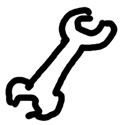 in its main window. Enter
the following (if it’s not already present) into the dialog that appears
afterwards:
- Language: the language of user interface; changes are applied from
the next launch of mailARS on.
- Name to be displayed: a name or a pseudonym to be shown to
recipients; if you leave this field empty, it will be filled with a
random number during the next launch of mailARS
- SMTP sender: your e-mail address for sending mail
- IMAP user: your user name for fetching mail, possibly identical to
your e-mail address on the previous line
- SMTP receiver: the e-mail address of your teacher; teachers leave
this field empty
- SMTP server: the address of your school’s server for sending mail
- IMAP server: the address of your school’s server for fetching mail
- Smooth curves after drawing: typically, you want to switch this on,
unless you are using a graphics tablet with an active stylus.
Basic functions
The main window of mailARS shows the mail boxes (Inbox, Drafts, Outbox).
To quit the program, close that window (not simply minimizing it).
Click to fetch mail from
the server. This button is colored red when new
mails have been available on the server for about one minute. Should
there be a problem when fetching mail (typically a typo in the
password), a time-stamped notification will appear on the status bar at
the bottom of that window.
To limit the number of thumbnails, teachers should switch on so that the inbox only
shows the latest mail of every sender. The size of the thumbnail
previews in the mailboxes (or rather; how many columns are formed at
maximum), can be controlled through the slider that appears after a
click on 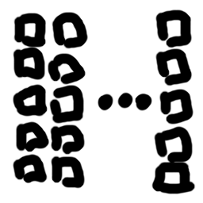.
If you let the mouse hover above one of the thumbnail previews in one of
the three mailboxes, a tooltip will appear that displays the names of
the addressees and the time stamp of the mail or the time of creation of
a draft. A click on 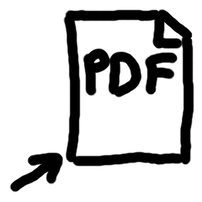 initiates the PDF export of all mails of the
currently visible mailbox as pages of a PDF file stored in the mailARS
subdirectory export. In case you want to
export only some of the mails, you can select those beforehand with help
of the checkboxes at the left top of the thumbnails. To select more than
one, press the Shift key while clicking.
You can create a new mail by clicking on . Afterwards and also if you click on a thumbnail in
one of the three mailboxes, mailARS opens a drawing window for editing.
A number of different drawing windows can be open at the same time.
To send a mail, you click on in
the drawing window. Should there be a problem when sending the mail
(typically a typo in the password), a time-stamped notification will
appear on the status bar at the bottom of the main (!) window.
You can keep the drawing window open, continue working in it and send the
current state from time to time. The Send button is colored red if you have
edited the mail in the drawing window. If you have edited a mail and
close the drawing window without having sent the mail, it is stored in
the Drafts mailbox. To be precise, when opening a mail, mailARS creates
a temporary draft copy unless that mail is already a draft; if you do
not edit the draft copy, it will be removed again after the drawing
window has been closed.
Before sending a mail you can check and edit its list of addressees. To
this end, click on 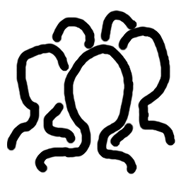.
To prevent flooding your general IMAP inbox, which is also visible in the
regular e-mail client program that you have been using all along,
mailARS creates a folder called mailARS in the IMAP inbox and moves all
mails with subject line mailARS, not intended
for reading into this folder. For safety reasons, these mails
are not deleted automatically. From time to time, you should use your
regular e-mail client program to check this folder for stray messages
and to delete all messages in it. In Thunderbird, for instance, you have
to subscribe to that – otherwise invisible – folder (right mouse click
on the title of the mail account in the list at the left border of the
screen). Should you have set up automatic mail forwarding from the
school’s mail server to a different server, mailARS’s automatic moving
of mails does not help; anyway, it is better to access the school’s mail
server directly, for instance through an e-mail client such as Thunderbird, which can
handle mail accounts on different servers in parallel.
Drawing functions
Click on 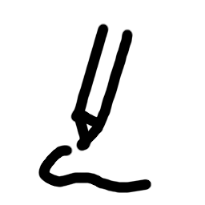 for the drawing tool
. Click on
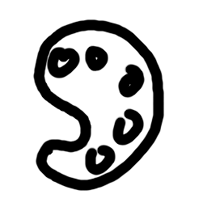 to open the color picker dialog
or on 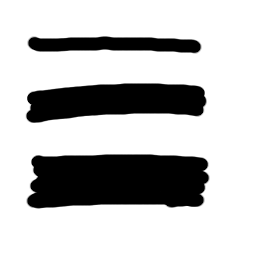 to set the
stroke thickness using a slider. A preview next to both buttons shows
the effect of these two settings. Click 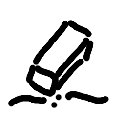 for the eraser . It removes entire pen strokes and leaves texts and
pictures untouched. You can momentarily switch from drawing to erasing
by pressing the right mouse button or by using the inverted end of an
active stylus (if it supports this) or by pressing the stylus’ button
that is configured to act as right mouse button.
Click on to select the text tool
. Use this tool to
create a rectangular frame; afterwards, you can type and edit text in
this frame as usual. At least on Windows you can use the operating
system’s support for alternative text input such as Pinyin. To change
the position and/or the size of the frame, apply the text tool drag its
borders. To adjust the font size, click on 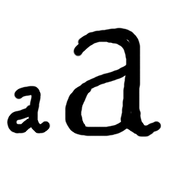 and set the slider that
appears afterwards. To edit exiting text, use the text tool to click on
it.
To take a photo with the webcam, click on  . Afterwards, mailARS opens a window with a live preview
of the camera, allowing you to cancel this operation or to insert the
current picture into the drawing. The preview is mirrored so that you
can more easily adjust the paper in front of the webcam. The image
delivered by the webcam is optimized for maximum contrast so that
drawings and handwritten text are captured well even under poor lighting
conditions. Note that a webcam has to be connected and must not
currently be in use. Hence, you have to temporarily pause the webcam in
video conferencing software that runs in parallel to mailARS.
. Afterwards, mailARS opens a window with a live preview
of the camera, allowing you to cancel this operation or to insert the
current picture into the drawing. The preview is mirrored so that you
can more easily adjust the paper in front of the webcam. The image
delivered by the webcam is optimized for maximum contrast so that
drawings and handwritten text are captured well even under poor lighting
conditions. Note that a webcam has to be connected and must not
currently be in use. Hence, you have to temporarily pause the webcam in
video conferencing software that runs in parallel to mailARS.
Click on 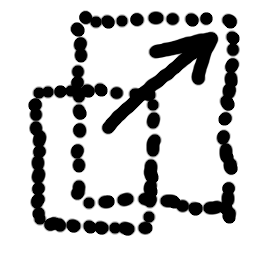 for the selection
tool . Use
this tool to select one object or several objects by clicking onto an
individual object or by drawing a rectangle that encloses or intersects
a number of objects. If you press the Shift key while releasing the
mouse button, the former selection is extended to include the current
objects; if you press the Control key, the current objects are removed
from the former selection.
mailARS displays two handles in the middle of the selection: 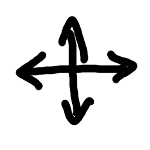 und 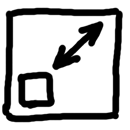. By dragging one of these, you control the position and
the size of the selected objects. Changes of stroke width, stroke color,
and font size are applied to all currently selected objects. By clicking
on you delete all currently
selected objects or – should none have been selected – all objects.
Undo and redo are invoked by clicking on 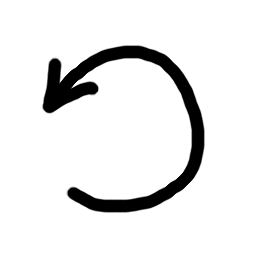 and 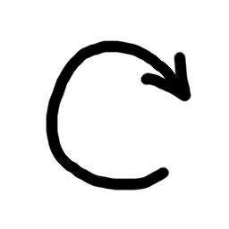. While
editing text, use the key combinations Ctrl+Z and Ctrl+Y instead.
By pressing the P key you can hide and show the toolbar. This helps
saving space on the screen, reducing visual distractions and preventing
inadvertent changes of the drawing window’s size or position. All
functions can be invoked through the keys that appear in the tooltips of
the corresponding buttons on the toolbar. The keys 1 through 6 invoke
preset colors. When using the keys, take care of the drawing window
being the active (usually the topmost) window so that key presses are
not send to the wrong window or even the wrong program such as the web
browser. In text editing mode, you cannot use the key commands as they
would end up as characters in the text. To prevent this, leave the text
frame by clicking the X in its lower right corner.
Tips for teachers
To distribute mailARS among your students, you should
- copy the mailARS folder,
- launch mailARS from that folder,
- in the settings, delete the name to be displayed so that a random
number will be generated on the next launch of mailARS,
- complete – as far as possible – the mail settings from the students’
perspective,
- drag the windows to the left and top of your (primary, should you
use several) display screen and reduce their sizes, as the positions
and sizes are stored,
- quit mailARS,
- with exception of the folder images
delete all folders (which will be recreated automatically) within
the copy of the mailARS folder (data protection!), and
- turn the copy of the mailARS folder into a zip archive (Windows:
right mouse button, Send to: Compressed (zipped) folder), which you
send to the students.
As an alternative to distributing the bare Python code, you can hand a
complete Python environment (that possibly even does not require
installation) to your students, for instance based on WinPython
Zero.
Ask your students at the start of the term to send you an empty drawing
through mailARS. This way, your copy of mailARS collects the mail
addresses so that you can send problems to everybody.
At the beginning of every session, you should open a new drawing window
and use this as the central whiteboard for your class. If you use only a
single display screen, you should (screen-)share only this single
drawing window with your students and not transmit the entire screen. If
you use two display screens, you can extend this central drawing window
to one of the screens (which you then share) and move all other mailARS
windows (including further drawing windows) to the other screen. As
mailARS opens every further drawing window at the position and in the
size of the drawing window moved last, it is sufficient to drag a single
drawing window to the second screen. Then, all further drawing screens
will appear on the second screen.